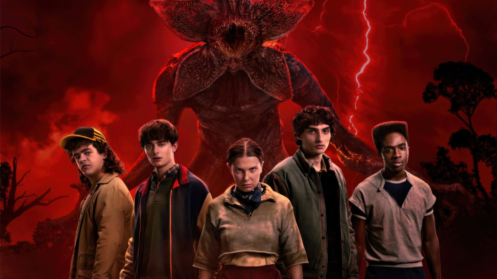

Personal broadcast from the offline dev server
🏏
RCB FANS COPING STATION

- New Year resolution: Believe in two impossible things –
RCB finally winning and me waking up at 5 AM voluntarily.
#EeSalaCupNamde #Maybe
- If RCB can make fans say "this year is ours" every season, then yes,
there is hope for all our goals too.
Peak optimism, powered by filter coffee
🧇
STRANGER THINGS ENERGY

This year, may your problems stay trapped in the Upside Down, your productivity be as strong as Eleven on a good day, and your friend circle as loyal as the Hawkins gang.
Also manifesting: no Demogorgons, no Vecna, only good Wi‑Fi, green CI pipelines, and snacks that magically appear when you need them most.
🧾
ADULTING PATCH NOTES

- Adulting 1.0: “New year, new me.”
Adulting 2.0: “New year, same me, slightly better exception handling.”
- Chores, bills, health, career, family, friends… life is basically
a production system with no staging environment.
- This year’s patch notes: fewer burnout all‑nighters, more hydration,
more walks, and slightly less doomscrolling at 2 AM.
🚀
SPECIAL WISH JUST FOR YOU

Wishing you green checkmarks on your goals, fewer bugs in code and in life, more random adventures, and friends who feel like home.
If you’re reading this locally, congratulations – you’ve just opened a New Year wish deployed from your very own laptop dev environment.